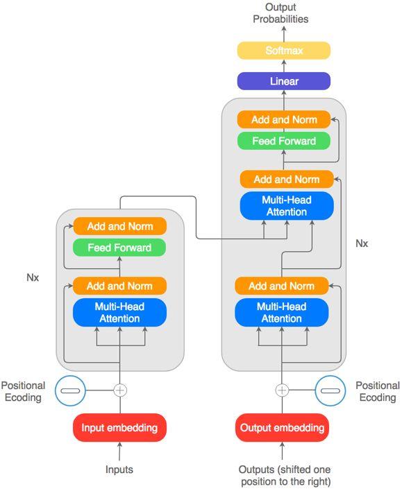

About Me
I'm Om Santosh Mishra, an inquisitive BSc.IT student at Smt. C.H.M. College focused on Machine Learning, Deep Learning, and NLP. I enjoy understanding how models work beneath the abstractions, not just using libraries and APIs.
I build by learning through implementation: from classical machine learning and computer vision to implementing Transformer architectures from scratch in PyTorch. My work involves training models, debugging failures, evaluating them properly, and turning working systems into usable applications.
-
Real-World Problem Solving
Analyzing complex datasets to extract actionable insights and drive informed strategic decisions.
-
Data Science Engineering
Python, SQL, Pandas, NumPy, Scikit-learn, and PyTorch.
-
Deep Learning & Transformers.
Designing neural network architectures (CNNs, ANNs) and building Transformers from scratch and fine tuning them.
-
Interactive ML Applications
Transforming predictive models into interactive, user-friendly web applications and dashboards using Streamlit and HuggingFace.
Technical Arsenal
The tools I use to turn problems into products.
Machine Learning
- Scikit-learn
- XGBoost / LightGBM
- Feature Engineering & Evaluation
- SHAP & Model Interpretability
Deep Learning
- PyTorch
- CNNs & Neural Networks
- Transfer Learning
- Training & Optimization
NLP & Transformers
- Tokenization & Sequence Modeling
- Attention Mechanisms
- Encoder-Decoder Transformers
- NLP & LLM Fundamentals
Engineering & Deployment
- Python & SQL
- Streamlit & FastAPI
- Git & GitHub
- Docker & Practical Deployment
Experience
NASA Space Apps Challenge
Oct 2025Awarded the "Galactic Problem Solver" certificate for the project "A World Away". We leveraged AI algorithms to accelerate exoplanet discovery.
Honed skills in rapid problem-solving, collaborative coding with Git, and presenting complex data science concepts under extreme time pressure.
Independent ML / DL Development
2025 – PresentDesigned and executed end-to-end machine learning pipelines for complex real-world scenarios. Built robust ML, DL and Attention Transformer models.
Specialized in Exploratory Data Analysis (EDA), advanced feature engineering, and model optimization to solve predictive challenges.
Featured Projects
Selected systems spanning machine learning, deep learning, NLP, and practical AI applications.
Featured
ML
Deep Learning
NLP
Scroll or use the arrows to explore


Technical Writing
Notes and engineering write-ups on AI, Data, and the systems I build.

Natural Language Processing
Building the Transformer Architecture from Scratch in PyTorch
A detailed engineering journey covering the implementation of the complete "Attention Is All You Need" architecture, large-scale training on 2.3M English-French sentence pairs, debugging numerical instability, beam search decoding, BLEU evaluation, and deployment with cross-attention visualizations.
Read Article
Deep Learning
LSTM Explained: From RNN Failure to Stable Sequence Learning
A deep dive into why vanilla RNNs fail and how LSTM uses gated memory to learn long-term dependencies.
Read Article
Guide
Machine Learning Made Simple
A beginner-friendly roadmap to understanding machine learning fundamentals.
Read Article
Computer Vision & CNNs
Building High-Sensitivity Pneumonia Screening
Deploying a fine-tuned DL model with Grad-CAM visualization and Streamlit.
Read Article
Self Learning
The Data Analysis Journey
How I went from zero Python knowledge to real-world data analysis projects.
Read ArticleLet's build something useful.
I'm currently looking for ML / AI internship opportunities where I can contribute, learn from experienced engineers, and build real-world systems.